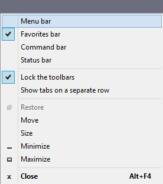

For how to manage pop-up settings in Chrome, have a look at Google's support documentation.
Mozilla's support pages show you how to manage pop-up blocker settings in Firefox.
Microsoft's FAQ shows you how to turn Internet Explorer's pop-up blocker on and off.
Safari's pop-up blocker doesn't block pop-ups from opening if you've clicked on a button, so please launch stopwatch manually.
CTRL + SHIFT + B
ALT + V
COMMAND + SHIFT + B